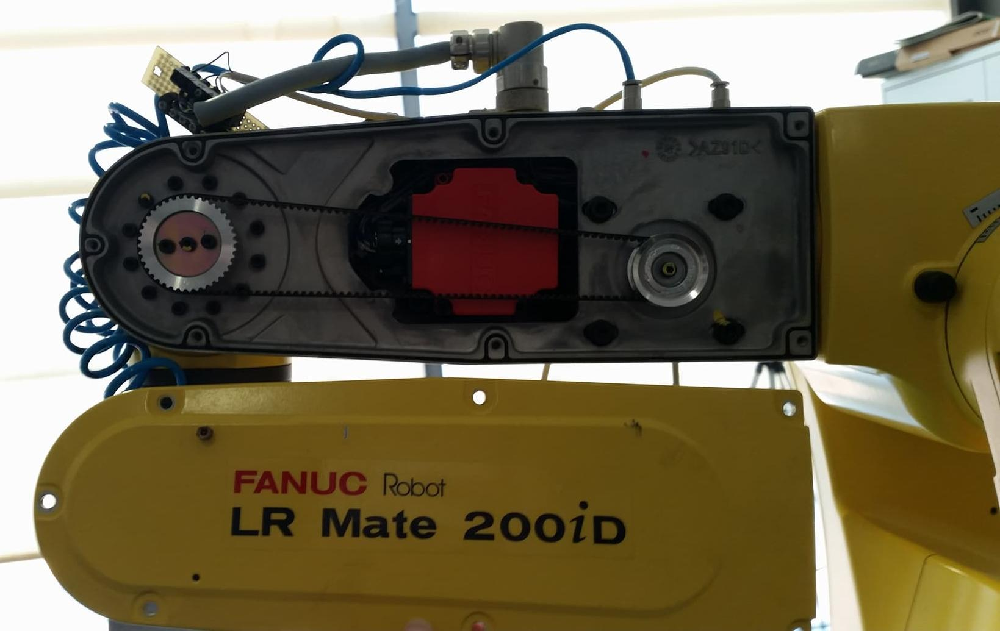
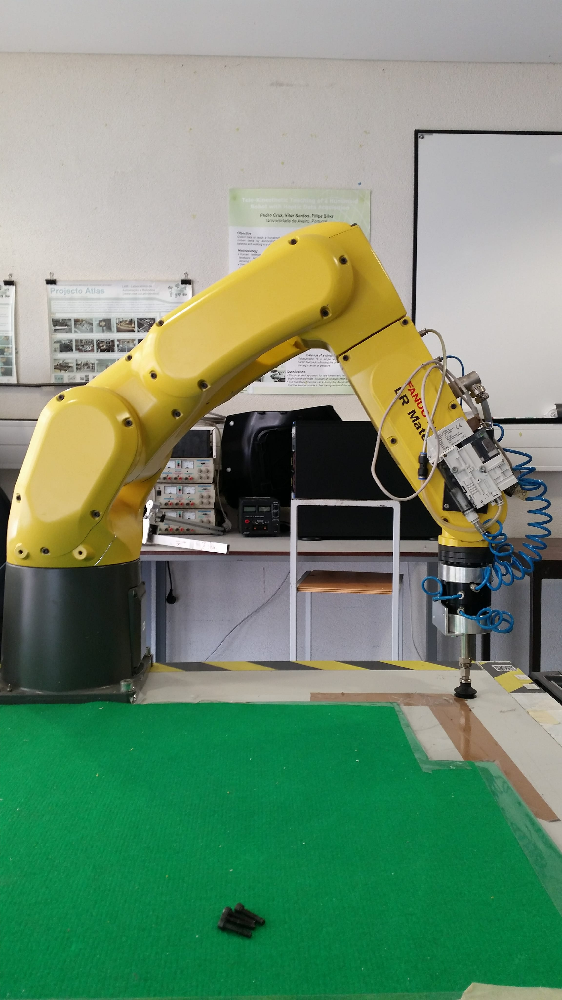

After analyzing all the positions of the Kinect on the robot, I selected the most adequate one which I believe is the position in which it as 4 degrees of freedom and its located on the side of the robot's arm. To install the Kinect in the robot it was necessary to design a support. To do so, this week I started by modeling a structure that could be screwed to one of the arms, represented below.
While opening the arm of the robot I noticed that there was not enough space to safely drill two holes to secure the support.

Therefore, another support was designed to avoid drilling the robot. The final model is represented in the pictures below.
After the manufacture of the support the Kinect was correctly installed.
Now, with the Kinect properly installed, it is fundamental to calibrate its extrinsic parameters, task which I will continue to do next week.
Robot FanucIn order to know all the transformations between the coordinate systems of the Kinect, the laser sensor, the robot and the gripper, I started by including the urdf files of the Fanuc LR mate200iD to have all the coordinate frames of the joints. The referential of the base of the robot was defined as the global coordinate system. Knowing that the urdf files of the Fanuc robot dose not incorporate the coordinate frame of the tool center point (TCP), I had to determine the exact length of the gripper. To do so, I visualized the values of the joints, and its coordinate systems, of the real robot in Rviz with the following command.
roslaunch bin_picking robot_state_visualize.launch
By moving the end effector closer to the table I was able to determine the difference in the Z axis between the referencial of the the tip of the gripper and the end of the robot. This process is represented in the pictures below.

This way the origin of the referencial of the end of the gripper was represented with an offset of 166mm. Knowing this I was now able to design a simple gripper to represent the real one. By incorporating it in the urdf files and the description of the last coordinate system, I could visualize the robot, the gipper in the respective position and all the coordinate systems so far, using the next command.
roslaunch bin_picking globalvisualization.launch
Given the fact that it is necessary to move the robot to positions with accuracy in oder to calibrate the sensor laser and to move to the exact centroid of an object, detected by the Kinect, I implemented a library developed by an ex-student. João Peixoto developed a library that allows you to communicate with Fanuc robot using a TCP/IP connection and send and receive commands in the robCOMM language. By running the next command I am able to run a program that moves the robot to a desired joint or cartesian position.
rosrun fanuc_control fanuc_control
Laser Sensor
This week I also changed the circuit used to convert the output signal of the laser sensor with the purpose of decreasing the cut-off frequency (ƒc). I used a ƒc of 99.5Hz to filter the readings of the sensor and eliminate undesired higher frequencies. Additionally, I altered the maximum reading of the sensor to 500mm, thus forcing the readings to cover only a range of 400mm, this way having a better accuracy in the measurements outputted by the device. The circuit implemented and the respective schematics represented bellow.
After redoing the entire process of gathering some analyses I obtained the next curve with the respective equation.
This equation was implemented in the code of the Arduino and the readings obtained with it were considerably more satisfactory. For example in a reading of 296mm the readings changed between the values of 295.87mm and 296.44mm.
Now it is necessary to implement the coordinate system of the sensor in the global one, to do so I have to determine the transformation from the base of the the robot to the exact position where it has been installed. To verify if the angle of the laser is 90 degrees from the table I used the robCOMM library to ensure the 5th joint was exactly 90 degrees from the table and moved the robot in the Z direction. I started the movement in the position represented bellow which is 70mm from the base of the robot, where I marked the center of the laser.
The movement ended in the following position which is 528mm from the base. It is possible to notice that the laser moved more os less 4mm.
Next I have to correctly determine the transformation from the point of the gripper to laser in the X, Y and Z dirrections.